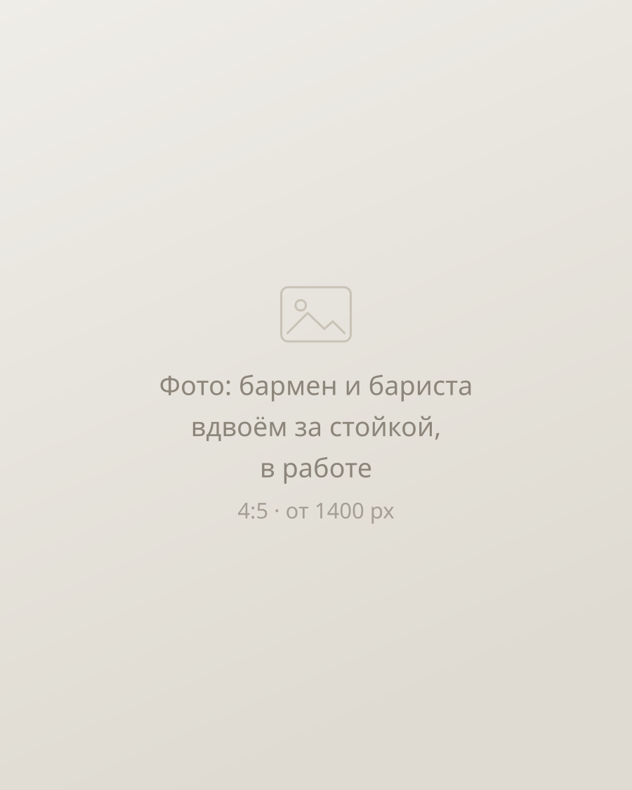

Conocimiento real del mercado
Conozco la gastronomía argentina desde adentro —tengo un café-bar en Buenos Aires— y puedo elegir candidatos que encajen de verdad con tu cultura.
Consultoría de RR. HH. · Buenos Aires
Selección profesional de personal para bares, cafeterías y restaurantes. Trabajo como tu socia de confianza: entiendo cómo funciona un local por dentro y conozco el mercado argentino.
Buenos Aires Más de 15 años en RR. HH. 14 días de garantía

15+ años
seleccionando y gestionando equipos
Corporaciones
y startups
Rostelecom, Rosneft y equipos jóvenes
Mi café-bar
en Buenos Aires: conozco la cocina desde adentro
14 días
de garantía de reemplazo
¿Nos conocemos?
Tengo más de 15 años de experiencia en RR. HH., tanto en grandes corporaciones —Rostelecom y Rosneft— como en startups.
Me especializo en seleccionar personal para perfiles muy distintos, en definir con precisión el perfil de cada candidato y en llevar adelante entrevistas efectivas.
Mi formación en gestión de personal en la Universidad RUDN me da una comprensión profunda de todos los aspectos de RR. HH., y eso ayuda a tu negocio a encontrar a los mejores.
Por qué gastronomía
Conozco la gastronomía argentina desde adentro —tengo un café-bar en Buenos Aires— y puedo elegir candidatos que encajen de verdad con tu cultura.
No te mando currículums sin más: selecciono con criterio, entrevisto yo misma y respondo por la calidad.
Te asesoro en gestión de personal, en la incorporación y en cómo retener a tu equipo.
Un turno no se sostiene con currículums, sino con dos personas que se entienden sin hablar.
Paquetes y tarifas
Cuanto más compleja es la necesidad, más adentro de tu equipo entro. Podés empezar por cualquier escalón.
1
150 USD
Una posición de personal de línea: cocinero, ayudante de cocina, mozo o bartender con experiencia básica.
2
350 USD
Dos personas de perfil especializado: bartenders, baristas o encargados de salón, con requisitos de experiencia y servicio.
3
800–1200 USD
Búsqueda de 3 a 5 posiciones, con checklists para el personal.
4
1500–2000 USD
Acompañamiento completo: selección, incorporación, reglamentos, instructivos y asesoramiento al dueño.
Precios en dólares estadounidenses. Abajo, cómo es el trabajo en cualquiera de los paquetes.
Cómo trabajo
Garantía de reemplazo: 14 días. Si la persona no encaja, busco un reemplazo.
Definimos a quién necesitás: tareas, horarios, experiencia y nivel de servicio.
Salgo a buscar activamente, no espero que lleguen postulaciones.
Entrevisto yo misma y descarto a quienes no encajan con tu equipo.
Te paso los finalistas con mi comentario sobre cada uno.
Preguntas frecuentes
Desde 150 USD por una posición de línea hasta 1500–2000 USD por RR. HH. llave en mano. Los cuatro paquetes con sus precios están en «Tarifas».
Hay 14 días de garantía de reemplazo: busco otro candidato.
Cocineros, ayudantes de cocina, mozos, bartenders, baristas y encargados de salón: desde posiciones de línea con experiencia básica hasta perfiles con requisitos de servicio.
No reenvío currículums en serie. Entrevisto yo misma, elijo candidatos que encajen con la cultura de tu local y sigo disponible para el dueño en temas de incorporación y retención.
Escribime unas líneas sobre tu local y la posición: te respondo y te digo por qué paquete conviene empezar.